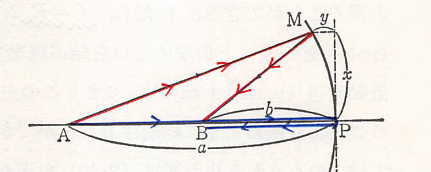

物理学入門
現在我が国の大学教育は一般教育と専門教育とに分かれているが、学問とはどのようなものであるかを学び取らせるということを第一の目的としている一般教育は専門教育の領域に一歩足を踏み入れなければその実行は不可能である。このことを考え、なかば専門教育の意味も含め、しかも対象を理工科方面に進む学生に絞って書いた一般物理学の教科書がすなわち本書である。
本書はその性格からいって、物理学科もしくはこれに近い学科に進もうとする学生諸君にとっては物理学の入門編であり、その他の諸君にとっては完結編となるべきものであるから、執筆者はいずれも基礎的部分に重点を置くとともに、現代の情勢からみて、科学技術者としての必要な知識はできるたけ盛り込むように努めた。内容は多方面にわたり、多少専門領域にまで渡った部分もあるので、この全部を限られた授業時間内に教室で完結することは不可能である。教室で取り上げるのはこの中の基礎的部分だけというつもりである。全体を通じ、学生諸君の自習を期待したので、説明を平易にすると共に数式の問題などもなるべく途中を省かないように努めた。また、随所に例題を入れ、章末に演習問題を設け、さらにその解をも示しておいた。このように本書は教科書という従来の通念から離れた自習書である。自習の間に必ず湧いてくるであろう疑問はこれを教室において解決するという方法で学習の実を挙げていただきたい。実際このような方法をとらない限り、現在のように進歩した物理学を一般教育課程というわずかの時間内に修めることは不可能である。
物理学の学習上いつも支障となるのは学術用語の不統一と、単位系の混用である。このような本質的でない問題に学力を割くのを防ぐため、本書では用語はなるべく文部省編集による学術用語集によることにし、単位記号や量をあらわす文字は国際純粋応用物理学連合（IUPAP）および日本工業標準（JIS）調査会の奨めているもの（SI単位系）に従うことにした。ただ、自習するにあたって過去の文献や論文を確認する必要が生じた際にMKS単位系、電磁気学ではMKSA単位系で表記されていることがある。そのような場合、用語や実験データを引用する際に現在利用されているものに変換が必要なことに注意が必要である。（参考文献：物理実験者のための13章）
mdbook serve --dest-dir docs
物理学における研究法
物理学では自然界におけるいろいろな現象を取り扱うが、その扱い方に特徴がある。すなわち、まず現象を分析してその中から大きさの考えられる要素を抜き出す。そして現象をこの要素の間の数量的関係として表す。例えば、空中に弧を描いて飛んでいるボールの運動という現象は、これをボールに与えられた”力”、これに働く”重力”、ボールの”速度”、”位置”、飛んでいる”時間”というように全て大きさの考えられる要素間の関係として捉える。このように大きさの考えられる要素を物理量あるいは単に量という。そして物理法則は一般に物理量の間の数量的関係として表される。物理量の中には例えば体積のように、その大きさだけしか考えられないもの、また力のように、その強弱（大きさ）の他に方向も合わせ考えなければなければならないものなどがあるが、いずれも物理量であることに変わりない。
さて、一つの物理量を扱うには最初にその性格をはっきさせた上で、その大きさを決めるための物理的な方法を規定しなければならない。例えば、物体の重さという量を考えられるときに、その重さを単に手の上に乗せた時の我々の感じで決めるとすることはできない。なぜかといえば、感覚はそれほど精密でもなく、またそれほど信頼のおけるものでもないからである。どうしても何か基準となるはかりのようものを考え、はかりに現れる目盛りによって重さを表すというような方法によらなければならない。
ところで、実際に自然界に起こっている現象というのは、これら多くの物理量が互いに関連しあい、複雑にからみあったものである。この中からある要素だけを単独に他と切り離して取り出すことは実際にはできない。例えば物体の運動に関して距離・時間・質量・力などの物理量が関係してくるが、この中から例えば時間という量を決める手段を考えてみよう。我々には時間の大きさというものが分からない。そのため、直感的に大小のわかるような長さあるいは角度のような1次元の空間的広がりを持つ量を用いて時間の測定を行う必要性が出てくる。加えて一定の速さで動くものを用意する必要もあるが、ここで一定の速度をもつことを確認するため事前に運動に関する法則を知る必要がある。しかし、まだ時間の決め方が確定していない以上その運動というものが決められるべきものでない。このように、ある一つの量を定義する際に他の量を定義しておく必要があった場合に、２つ目の量を定義するのに1つ目の量が関連してくるという循環的な関係が生ずる。
この関係は、非常に数多くの未知数を持つ複雑な連立方程式の解を求めるときの事情に似ている。極めて多元で高次の方程式を解くとき、正攻法で各未知数を順次に求めることはできない。こういう場合、我々は視察によって解くという方法を用いる。すなわち、まず数個の未知数に予想される数値を仮に与え、他の未知数はこれから求める。そして次にこれらが全ての連立方程式を果たして満足するか否かを調べる。もし満足しなければ最初の予想値を修正する。こうして略値から漸近的に正しい答えに向かうのである。
これを上の運動の例で言うと、まず地球が等速回転しているものと仮定してから時間の大きさの決め方を決める。次に適当な予想を許すことにより質量や力などの量の決め方を定め、運動の法則を導く。そして、この運動の法則を基礎として地球の自転運動を論じ、これが等速回転運動であることが証明されれば最初の予想に過ちが無かったということが言える。このような経緯で、物理量はまず最初にはっきりした定義を与え、明確な測定方法で一つ一つ順次に規定していくというわけにはいかない。どうしても、ある仮定を設けて進んだ後で訂正を行いつつ全体としてみた時にそこに矛盾がないように決めるという方法に頼らざるを得ない。ことに力学の最初の部分などにおいて、個々の量の決め方に論理的な必然性を欠くところがあるが、これらの量は全体の関連において定義され理解されるべきものである。
以上のことは法則を導く場合でも同様である。我々が数個の要素の間の関係を知ろうとして実験しても、実際には必ずほかの要素が不可逆的に混入してくる。しかし我々はこの実験結果から混入要素を除いた時の結果を想像して、これから与えられる要素間の関係すなわり法則を帰納する。このように、物理学における研究方法は帰納的であって演繹的ではない。したがって仮に現在完全と思われる物理学の体系があったとしても、将来の新事実が果たしてこの中に矛盾なく収まるかどうかは保証できない。入らなければ体系を作り変える。こうして次第に完全な体系へ向かわせようというのが物理学の研究方法である。
単位と単位系
一つの物理量を表すのには、まずその基準となる大きさの量すなわち単位を適当に選び、その物理学がこの単位の何倍（数値）にあたるか示せばよい。すなわち
の関係で表すことができる。
さて、単位はそれぞれの物理量に対して決めるべきものであるから、それぞれ任意に選ぶことができる。例えば、長さと面積とは本来別種の量であるから別々に単位を決めて悪いことはないが、ある関係を持たせて決める方が現象を数量関係として表す場合に簡単になる。例えば長さの単位を任意に決めたら、面積の単位はこの長さの一辺とする正方形の面積と決める。また体積の単位としては単位長さの一辺とする立方体の体積をとり、さらに長さと時間の単位を適当に決めたら、速さの単位は単位時間に単位の長さ進む速さと決める。このように、最初まったく適宜に決めた単位を基本単位、これから導かれた単位を組立単位（誘導単位）という。問題は物理量全体を取り扱うのに何個の基本単位が必要かということであるが、力学的現象を扱う範囲内でいえば3個の基本単位が必要で、またそれだけあれば十分である。このことは実際にあたってみれば容易に理解されるであろう。基本単位はそれが絶対不変であると信じられるものでなければならない。そしてこの条件を満たすものとして長さ・質量・時間の3個が選ばれている。このようにして長さ・質量・時間の基本単位およびそれから導かれる組立単位の全体を絶対単位系という。
単位自体、各人が自由に作り使用することができるが、いざ量の大小を比較するとなると単位間の換算まで都度行わなければならない。そのため、以前からそれぞれの集団や壮会において統一した単位を使用する動きがあった。世界的には、1875年に17カ国の批准によって成立したメートル条約から始まり、数年に一度ずつ国際度量衡総会（度は物差し、量は升、衡は天秤）が現在に至るまで開かれている。この中で決議され、各国で正式に使用が認められている単位系を国際単位系（Système International d'Unités 略して SI単位系）といい、7つの基本単位および2補助単位（平面角のrad(ラジアン)と立体角sr（ステラジアン））で構成される。下記は、2023年時点でのSI単位系における基本単位の定義を表している。（以下も古いため、修正が必要）
- 時間：秒（s）… セシウム周波数、即ちセシウム133原子の摂動を受けない基底状態の超微細構造遷移周波数を単位Hz（ sに等しい）で表したときに、その数値を9192631770と定めることによって定義される。
- 長さ：メートル（m）… 真空中の光の速さcを単位msで表したときに、その数値を299792458と定めることによって定義される。ここで、秒はで定義される。
- 質量：キログラム（kg）… プランク定数hを単位J・s（kg・m^・s に等しい）で表したときに、その数値を6.62607015×10と定めることによって定義される。ここで、メートル及び秒は、それぞれc及びを用いて定義される。
- 電流：アンペア（A）… 電気素量 e を単位 C（ A・sに等しい）で表したときに、その数値を1.602176634×10と定めることによって定義される。ここで、秒は によって定義される。
- 熱力学的温度：ケルビン（K）… ボルツマン定数 k を単位 J・K（ kg・m・s・Kに等しい）で表したときに、その数値を1.380 649×10と定めることによって定義される。ここで、キログラム、メートル、秒はそれぞれh、c、を用いて定義される。
- 物質量：モル（mol）… 1モルには、厳密に6.02214076×10の要素粒子が含まれる。この数は、アボガドロ定数 Nを単位molで表した時の数値であり、アボガドロ数と呼ばれる。 系の物質量(記号は n )は、特定された要素粒子の数の尺度である。要素粒子は、原子、分子、イオン、電子、その他の粒子、あるいは粒子の集合体のいずれかであってもよい。
- 光度：カンデラ（cd）… 周波数 540×1012 Hz の単色放射の視感効果度 Kcdを単位 lm・W（ cd・sr・W あるいは cd・sr・kg・m・s に等しい）で表したときに、その数値を683と定めることによって定義される。ここで、キログラム、メートル、秒はそれぞれ、h、c、によって定義される。
物理学で取り扱う量は膨大なものから極微のものに至る。長さで言えば、天文学的の距離から原子的な長さまである。そこで一つの単位に対して副単位を考えておくと便利である。実際に用いられている副単位は基本単位名に以下のような接頭語をつけて呼ぶ。例えば nm は nanometerで m を意味し、Tg は teragram で g のことである。
| 基本単位に対する倍数 | 呼び方 | 記号 |
|---|---|---|
| tera | T | |
| giga | G | |
| mega | M | |
| kiro | K | |
| deci | d | |
| centi | c | |
| milli | m | |
| micro | μ | |
| nano | n | |
| pico | p |
長さの単位
長さはもともと点の相対的位置を表すための量で、二つの長さはこれらを重ね合わせることによって直感的にその大きさを判定することができる。長さがあらゆる物理量の中での最も基礎的なものになっている理由はここにある。そして他の物理量も、これを正確に知るためには長さの測定によることが非常に多い。例えば、時間は時計の針の動いた距離で、物体の重さははかりの目盛りで温度は水銀柱の長さで測るなどがこれである。
長さの単位として物理学で用いられているものはメートルであるが、このメートルが最初測定されたのはフランスで1795年のことである。そして地球子午線の全長の4000万分の1の長さをもって単位とするというのが最初の考えであった。これにしたがって子午線の実測を行い、その後、幾多の経緯を経た後に1875年に至って初めて国際的にメートル条約ができ、メートル原器というものが制定された。このメートル原器は特殊の切り口（これは曲がりにくくするため）をもち、白金90％、イリジウム10％の合金で作られた棒で、その両端に近いところそれぞれ細い標線がある。0℃におけるこの標線間の長さが1m と決められた。この国際原器はパリ郊外の国際度量衡局に保管され、各国はこれとほとんど同じもの（副原器）を保管することとなった。それぞれ多少の誤差は免れ難く、我が国に配布されたものでは、標線間の長さは
であった。ただし は温度（℃）を、 はミクロン（micron）で m である。
このようにして決定されたメートル原器にもいろいろ難点がある。まず第１は永久不変性の問題で、人工的なものである以上、破損の危険がないとは言えないし、またこのような合金製のものが長年月の間にひとりでに変形しないとは保証できない。しかもそれ以上の欠点とされるのは精度である。原器の両端にある標線は細い線であるが、それでも幅が 程度である。そこで両線の中心を採ったとしても全長に 程度の誤差は免れ得ない。すなわち、相対誤差 の精度しかなく、これでは進歩した現代の精密科学の要求を満足してくれない。そこで、永久不変性という意味で、ある決まった光の波長を長さの基準にするという考えが20世紀初頭からあった。そして、 Cd 蒸気中における放電の場合に発する赤色光をこのために用いるという提案がなされたこともある。
光の波長を基準にするというのは
"外から何らかの影響を受けていない静止した同一種の原子の出す光の波長は定まっている"1
という考えに基づくものである。しかし現実には、元素が同位体の集合であって、完全に同一種の原子の集合でないこと、原子同士が互いに影響しあっていること、これを光らせるために電気的影響を受けていること、原子が前後左右に振動しているために、その発する光が例え一定でもDoppler効果によって異なった波長の光の混合として観測されること、などその他いろいろの理由で純粋に波長が一定した光というものが得られなかった。
その後の研究によってKr2 という同位体が分離されるようになり、理想に近い光が得られるようになった。そして1960年10月14日の国際度量衡総会で、今後長さの単位としてKr の発するKr66橙色線の波長を用いることが決定され、わが国でも1961年7月1日からこれによるということが政令で決められた。
以下の図はこのKr ランプの要点を示したもので、Vは熱陰極を持った真空管で、この中に少量のKr が封入され、放電によって得る光の波長はBの方向から分光器で観測する。Vを液体窒素Nの中に入れ、この窒素はポンプで減圧し、Nの温度が（63±1）°Kの範囲になるようにして用いる。
Kr の低温低圧における発光を用いたのは、上に述べた種々の障害を少なくするためで、放電電流にも一定の限度が与えられている。
こうして出てくる光の中のいわゆる Kr86 橙色線の真空中における波長の1650763.73倍を 1 m と定義する。もちろん従来の 1 m とほとんど違いはない。
この方法は極めて精度の高いもので、メートル原器の精度がであったのに、ここではの精度が得られ、将来はの精度にまで上げられる見込みである。
数個の飛び飛びの波長の光の混合でるから、その中の一つを選ぶ。
もともとKrの中には質量数、78、80、82、83、84、86の同位体が含まれている。
時間の単位
我々には時の経過したことは分かるが、経過した時間の量は精密には分からない。そこで、一定の周期をもつと想像されるもの、あるいは等速運動をすると想像されるものを仮定して時間を測る。そしてこの想像が果たして正しかったかどうかは、これから出発して作られる物理学の体系を全体的に見て判定する。
それにしても、ある一定の時間、すなわち単位を決めなければならないが、最初の一定の時間として採用されたものは地球の自転から割り出したものであった。いま、地球の中心を中心としてきわめて大きな半径の球面を天空に想像し、全ての星をこの天球上に投影してみる。地球の自転を考慮しないことにすれば、全ての恒星はほぼ天球上の固定点となるが、太陽はこの天球上を運動する。それは地球が太陽の周りに公転しているからである。

この太陽の軌道 VDACV を黄道という。地球は太陽の周りに一定の角速度で運行しているわけではないから、黄道上の太陽の速さも一定ではない。また地軸はこの黄道面（すなわち地球の公転軌道の平面）に垂直になっていない。したがって、地球の自転角速度が一定としても、１日の長さ、すなわち太陽が南中してから翌日南中するまでの時間は四季によって変わってくる。
そこで、地球の中心を通り、地軸に垂直な平面と天球との交線 EW を赤道と名づけ、この赤道上を一定の速さで動く仮想的な太陽を想像して、これを平均太陽と名付ける。赤道と黄道との交点 V, A の中で、太陽が南半球から北半球へ移る方の点 V を春分点、他の点 A を秋分点という。平均太陽の運動の速さは、真太陽と同時に春分点を出発して、翌年同時に春分点に戻るような速さと決められている。実は地軸が一定の方向を保たず、きわめて徐々にこまのようなすりこぎ運動をしているので、赤道面の方法は徐々に変わり、春分点も多少移動していく。春分点を出て再び春分点に戻るまでの時間は、厳密に太陽が天球上を１周する時間よりやや短く、これを 1太陽年（あるいは 1回帰年）という。
それはとにかく、平均太陽は赤道上を一定の速さで動いているので、もし地球の自転の速さが一定ならば、平均太陽が今日南中してから、翌日南中するまでの時間は一定となるはずである。この時間を1日、その 1/24 を 1時間と定義する。1
以上が従来の時間の単位で、これは地球自転が一定不変の速さという仮定に基づいている。しかし。このようにして決めた今までの時間を用いると、地球から見た月の運動が計算から予想されるところと違い、永年の中には次第に早くなっていく傾向のあることが分かった。地球に万有引力をおよぼしているものは太陽の他に惑星もある。このために地球は太陽の周りに正確な長円運動をするのでなくて、きわめて僅かずつであるが、軌道の形が円形に近づいていく。月のみかけの運動が計算と合わない一つの原因がここにあるが、それだけでは計算の違いが十分説明できない。このようなことから、地球自転速度が一定という仮定にはかなり以前から疑いが持たれていた。近年、時計が非常に進歩し、ことに水晶時計が発達し、時間の測定がきわめて精密に行われるようになるにつれてこの疑いがますます濃くなってきた。

水晶は、伸び縮みするとその両端に正負の電荷を発生する。そこで両端に交互に正負の電荷を与え、しかもその周期に合わせると共鳴してよく振動する。この振動の周期は非常に一定したもので、温度による影響などもはなはだ小さい。そこでこの水晶片を利用して一定周期の交流を作ることができる。ただこの場合の交流の周波数は極めて大きいが、周波数は真空管回路によって何分の一にでも減少することができる。こうして普通の交流が得られ、これに電気時計の原理を応用して一定の速さで動く時計が作られる。これが水晶時計の原理である。
こうして現在では、もはや地球の自転速度は一定ではなく、100年後の1日の長さは現在よりも0.0016秒長くなると考えられるに至った。原因は主として、ベーリング海を通る潮汐が地球と摩擦してその回転運動を止めることなどのためであるといわれている。
このように自転が一定でないことが明らかになり、時間の単位の基準は地球の自転から公転へ移った方が妥当であるということになった。そして1956年の国際度量衡委員会で、時間の単位としての秒（s）を1900年1月0日12時（1899年12月31日正午、日本時間同日午後9時）の回転速度をもって太陽が春分点を通るまでの時間（太陽年）の1/3156925.9747と定義するに至った。我が国ではあ昭和33年4月15日以後この基準によっている。
さらに時間の単位として原子的基準を使うことも考えられる。たとえばアンモニア分子は、Krが極めて純粋な一定波長の光を発すると同様に、一定波長の純粋なマイクロ波を発生する。このアンモニア蒸気に外から種々の波長のマイクロ波をあてると、この一定波長に等しいものだけは強い吸収を受ける。この現象を利用すれば、きわめて純粋な一定の波長のマイクロ波が得られる。もっとも純粋なのは22834.185メガサイクル・毎秒（Mc・S）のものである。水晶時計と同様な方法で周波数を下げ、普通の交流にしてから電気時計の原理で時計を作る。原子時計とよばれるのがこれである。
日本では統計 135° の地点すなわち明石市を通る子午線を基準に選んでいる。そこで、平均太陽は正午に明石市で南中するが、真太陽は必ずしもそうでない。
重力質量とその単位
水は熱すれば水蒸気となり、冷やせば水となる。またロウソクは燃えて空気中の酸素と化合し、水蒸気や二酸化炭素に変わる。しかし姿は変えても物質は物質である。フラスコの中に閉じ込めた物質が、中でどんな変化をしようと、物質としての量は変わりがない。これが経験から得られた我々の観念で、こうして物質の量という概念が導かれる。
しかし、この物質の量というのは観念的なもので、その内容がきわめて漠然としている。このままでは到底物理量として取り入れるわけにはいかない。これを明確な物理量として取り入れるためには、それが何で測られるかを明瞭にしなければならない。仮に、そのものの体積で表すという方法を採ったとしてみよう。シリンダーの中に閉じ込めた気体はピストンで圧縮することによってその体積は何ほどでも小さくなる。物質が減ったわけでもないのに体積は減る。このことは、明らかに体積が実質の量を示すのに適当でない物理量であることを示している。物質の量を表す物理量は、その物体に物質が出入りしない限り一定のものでなくてはならない。
物体に付随する量はいろいろあるが、その中で重さという物理量はこの役目を果たすのにちょうど適当であることが分かる。すなわち、閉じたフラスコをばねはかりで測ってみると、中で何が起ころうと重さに変わりがない。一方、例えば純粋のように全く一様なものについていえば、二倍の体積のものの重さは二倍であって、このことも物質の量という概念と一致する。
ただ、物体の重さは測定する場所によって変わる。したがって重さそのものは物質の量を表すのに適切でない。しかしこの場合でも重さを用いて物質の量を比較することはできる。なぜかといえば、経験の示すところによると、場所による物体の重さの増減はすべての物体に同じ割合で起こるからである。
そこで物質の量を比較するには次のようにすればよい。
-
まず厳密に一様と考えられる物質（例えば白金塊） を選び、これを等しい体積に細分したとき、各片のもつ物質量は等しいと考え、これを基準物体に選ぶ。
-
他の一般の物質の場合では、その重さが同一の地点で測って上の基準物体の個の重さに等しい時には、その物質量は基準物体の倍と考える。
このようにして決めた量が重力質量という物理量である。重力質量はこのように、物質の量を示すのに最も適すると考えられて作られたる量ではあるが、物質の量そのものではない。物質の量が漠然とした観念的なものであるのに対し、重力質量は明確な物理量である。物理量としての重力質量は、物質の量などという漠然とした観念から独立して考えるべき量で、むしろ物体に付随し、その属性を示す１種の量と考えるべきである。
重力質量の基準となるものはキログラム原器である。1875年のメートル条約に基づいてメートル原器を作ったときと同時に、同様な合金（Pt 90％、Ir 10％）で作られた円筒形の物体で、その重力質量を1kgとしてある。この円筒はその直径と高さが等しい（共に39mm）ように作られているが、これは表面積を最小にして、外からの影響を最小にするための配慮に基づいている。
この原器で最も問題になるのはその永久性で、ことにその表面に表ずる化学変化である。しかしこの原器に関する限り、化学反応その他で質量的に変化すると認められるような確かなものは現在のところ存在しない。鋳造当時この合金の内部に吸蔵された気体が徐々に遊離して出ていくために、原器が物質的に減少していくと考える人もあるが、これも疑いの程度を出ていない。こうして、キログラム原器は以前まで重力質量の標準となっていた。
単位の変換と次元
長さ、質量、時間の単位には、m,kg,sの三つが用いられているが、m,kg,sもまた同様に用いられる。この他、米英などでは長さにfoot、質量にpoundなどが現在もなお用いられている。組立単位の大きさは基本単位の大きさによって変わる。例えば面積の単位の大きさは、単位長さの一辺をもつ正方形の面積と規定されているから、1mを基本としてできる面積単位は、1cmを基本とするものに対して10000倍の広がりをもっている。そこで長さの単位 に対する面積の単位を で表すと、 cmとmの場合でいえば である。今、長さ・質量・時間に対する２組の基本単位をそれぞれ としてみると、各種の組立単位の大きさの比はそれぞれ次のように与えられる：
これらの式の右辺の指数を組立単位の次元（dimention）とよび、また速さの次元は であるともいう。一般に、一つの物理量を単位 で表した時の数値を とし、単位をで表した時の数値を とすれば
そこで、単位 の次元を長さ、質量、時間についてそれぞれ とすれば
となる。いまこの式を仮に次のように書き直してみる：
この式は先ほどと違って、文字通り解釈したのでは意味がない。それは長さの単位を 乗するということが無意味であるし、さらに長さの単位と質量の単位の相乗積などということも意味をなさないからである。しかし形式的に を普通の数と同様に取り扱えばここまでに出てきた式と同じことにある。このことはまた と書くこともできる。これが単位記号として広く用いられ、次元式とよばれているもので、例えばMKS制における密度、運動量の単位はそれぞれ、kg・m、m・kg・sと表される。いうまでもなくm・kg・sなどは単なる記号に過ぎないが、このように表しておく単位の換算にあたってkg、m、sを数と同様に考え、数の乗除法を適用できるという便宜が得られる。
[例題] 4℃における水の密度は1立方cmあたり1gである。これは1立方mあたり何kgか。
[解]まず密度の次元は で表される。そこで、求める値をとすれば kg=1000g、m=100cmを代入すると
量の間の関係式
すでに知っているように、数量 kgの物体にNの力が働いた時m・sの加速度が得られたとすると、 の関係がある。この式に現れるはいずれも数値であって、この式は数式である。
さて、この場合の力の単位は、単位質量に働いて単位加速度を生ずる力として導かれるものであるから、単位の換算にあたって前式からも分かるように と書くことができる。そこで各数値の代わりにそれらが表す量の単位の次元式を代入すると、 となり、両辺の単位を次元式で計算したとき等しいことを示す。以上のことから、形式的に という式が導かれる。この式の（質量）、（加速度）、（力）は物理量である。したがって、この乗法記号の×は単なる数の相乗記号でない。数値は数値としての計算で両辺の等しいことを示している。
このことから、 を単なる数値と考えずに超そのものを表していると考えることもできる。そしてその方が便利なことが多い。なぜかといえば、数値は単位の選び方によって変わるが、量そのものは単位のいかんに無関係だからである。本書でもこの意味において などのような記号を量記号として用いることが多い。
古典力学
昔々、まだ夜道を照らす灯もなく、人々の住まいは一日の半ば近くも真っ暗な闇の中に閉ざされ、その闇の奥から時折狼の遠吠えが、野原を渡る風の音に混じって気味悪く聞こえて来ていた頃、恐らく星は人々にとって今よりも遥かに身近で重要な存在だった。一日の仕事を終えて粗末な褥（しとね）に身を横たえる前のひとときや、東の空の白むのももどかしく眠りから目覚めた時、彼らが決まって振り仰ぐ星空には幾つもの親しみやすい図形が待ち受けていた。その或るものは美しい乙女が天に舞う姿を思わせたし、また或るものは大きな獅子となって頭上から彼らを威圧するかのように見えた。
そのような図形や相互の配置のおおよそを、恐らく多くの人々はそらんじていたのであろう。実際、満足なあかりも、そしてまた、その下で読むべき何物をも持たなかった人々にとって、星空は彼らの涯しない夢を育むただ一つの、そしてそれ故にこそ何回となく読み古された物語のようなものだった。
月日の流れを知る目安として、子は親から、親はまたその親から教えられたことであっただろうが、夜明け前の東の空や日没間もない西の空に輝く星の一団は、何故か季節によっていつも決まっているように見えた。天球上の太陽の通り道としての黄道（地球の公転軌道面と天球との公転）は、このようにしていつとはなしに人々の知るところとなった。

上図のような黄道十二星座が、その通り道をたどる道しるべとして人々の間に根をおろしたのは、今からもう五千年以上も昔、バビロニア地方でのことといわれている。この黄道近く、これらの十二の星座を横切って、時には後戻りを交えながら、夜毎に少しづつその位置を変える幾つかの明るい星があった。こうして先ず、水星、金星、火星、木星、土星と呼ばれる比較的明るい5つの惑星が人々の前にその姿をあらわした。これらに大きな関心を示すようになったのは、占星術上の必要もあったであろうが、多分に宗教的意味も込められていたと考えられている。
今日、我々は例えば上図に示された一連の写真のように、いくつかの惑星がたまたま天球上の一か所に集まるように見えたり、あるいは惑星の一つが黄道十二星座の中の一等星のそばを通過するように見えるときなどに、このような惑星の動きを実感をもって捉えることができる。だが極く限られた天文愛好家たちを除けば、今日われわれのほとんどは、たとえ夜空を眺めたとしても、金星以外の惑星の存在には気づかずに見落としてしまうのが普通である。だから、古代の人々が来る夜も星との対話の時間を十分に持ち合わせたということは、物理学の萌芽にとってこの上もなく大事なことだった。彼らが天球上の幾つかの星の不思議な動きに目をとめた時、人は後年古典力学の成立のきっかけとなった。この天球上の動きというのは、実は身近な物体の動きと同じ法則に基づいているため、以降では最初に身近な物体の運動について論じていくことにしよう。
運動の表現方法
我々は間口と奥行きと高さを持った3次元空間の中に住んでおり、物体の運動もその中で起こっている。運動とは物体の位置が時間とともに変化することであるから、ある運動を記述するためには、例えば以下の図のように時々刻々における物体の位置を追いかけていけばよい。

ところで、われわれの目に映る物体は全て大きさを持っているから、その位置をどの地点にするかを初めに指定する必要がある。直感的には物体内のある一点になると思われるが、この点について少し考えてみよう。例えば以下の図のように物体内の一点が矢印のように移動したものとすると、左図（並進運動）では他の地点に指定しても同じような動きをすることが分かる。しかし、右図のように途中で引っ掛かり回転運動した場合だと質点の位置によって位置の変化が異なる（異なる運動をする）ため、単純に地点を指定することができないことが伺える。同様なことが変形した場合でも言える。

以上のことから、まずは話を簡単にするため物体を質量だけを備えた点、すなわち質点（particle、point mass、material point）とみなして並進運動のみ取り扱っていくことにする。
物体の位置を記述するとき、必ずなんらかの基準から見たものとなる。例えばAさんとBさんの二人がいて、AさんがBさんに床に置かれた物体の位置を伝えようとすると「Bさんから見て右側」というようになることからも伺えるであろう。それを聞いたBさんも右側を見て、自分を基準として目分量で物体の位置がこれぐらいだと把握するであろう。このように、物体の位置を把握するためには基準点O（Bさん自身の地点）を中心として座標系K（Bさんの目分量）を用意する必要がある。さらに物体のある地点Pに質点を考えると、その位置は基準点O（または原点）から見た位置として記号 で表記することができる。あるいは太文字で と表すと、 は長さOPを示し、太文字で書くと長さに加えて向きまで含めたものとなる。このときの を位置ベクトルという（ベクトルの中でも長さしか持たない量はスカラー量と呼ばれる）。また、ここでは座標系KをBさんの目分量としていたが、それだと見る人によって大きさが異なってしまうため、一般的に下図のように直交直線座標（デカルト座標）が多く用いられる。

このときのP点の位置ベクトル は座標 を用いて
で与えられる。また、この図での は、それぞれ x、y、z 軸の正の方向に向かう単位の大きさのベクトル（基本ベクトル）
を表している。これを用いると、位置ベクトル は
と書くことができ、後で出てくるが別の座標系に変更する際に見やすくて便利である。一方で、このときの原点から質点までの距離 は
で与えられる。
ここまでに位置ベクトルについて述べたが、これは質点の運動において時刻 ごと変化するため というように の関数として表すことができる。そのため、仮に時刻 で位置ベクトル なるA点にあった質点が、時間 の後に なるB点まで動いたとする。このときの質点の変位（displacement）Δr は、以下の図に図示されたようなベクトル算法を用いて
と書ける。また、変位 の長さも
となるが、同じ という時間でも変位が大きければ大きいほど速いということになり、同じ という変位でも時間が短ければ短いほど速くなるので、速さを表す度合い（速度）は として
と定義すればよいと考えられる（は定義することを指しており、右側にその内容を記載する）。この方向は変位 と同じであり、細かく言うと平均速度と呼ばれる量となる。一方で、速度というのは一般的に各時刻ごとに異なる（極端に短い時間で変化する）量であるため
というように記載すると厳密なものとなる（こちらは瞬間速度と呼ばれる）。この方向は先ほどと異なり、下図のようにA点において引かれた質点の軌道に対する接線の方向に等しく、その大きさは軌道に沿っての質点の速さ（speed）に等しくなる。

ちなみに、先ほどのデカルト座標を用いると速度は以下の通りに書ける。
ここまで運動をどのように表現するかを述べたが、次からは実際に運動がどのような法則に従ってなされるのかを見ていくことにする。
運動の法則
巨視的な物体の運動を論ずる学問として古典力学は、Newtonがその「プリンキピア」の導入部分に掲げた3つの法則にその基礎を見出すことができる。ここでは、その3法則をNewton自身の表現（特に第2法則の表現）に若干手を加えた形で紹介することにしよう。
-
すべての質点はそれに加えられた力によってその状態が変化させられない限り、静止あるいは1直線上の等速運動の状態をつづける。
-
質点の運動量（=質量×速度）の変化は、加えられた力の方向に沿って起こり、微小時間内における運動量の単位時間あたりの変化の大きさは加えられた力の大きさに等しい。
-
全ての作用に対して、等しくかつ反対向きの反作用が常に存在する。すなわち、互いに働きあう2つ質点の相互作用は常に等しく、かつ反対方向へと向かう。
これらの法則は、それぞれ順に慣性の法則、運動方程式、作用・反作用の法則として知られており、通常Newtonの運動の3法則と総称されている。3法則のうち、
熱力学
現在のように熱力学と呼ぶようになったのは19世紀に入ってからであり、それ以前は単に熱学であった。熱学の研究の起源については、他の科学の歴史と同様に、古代ギリシャ、ローマにまで遡らなければならない。当時、自然現象を研究する基本的方法は、見たり感じたりなどする簡単な観察が行われた程度であった。すでに当時でも、最も簡単な熱作用の現れである蒸発、沸騰、融解などが知られていたが、これらの現象を説明しようとする試みは成功していなかった。
人間がこの分野における知識をはじめて充実させ、体系化して物理的解釈を与えたのはやっと17世紀になってからのことである。それは熱現象を単に観察するだけではなく、実験的に研究しようとするようになったからである。この頃になると温度計の発明がなされていた。たとえば、ガリレイは空気の熱膨張を利用した一種の気体を考案している。あとで述べるように、引き続いていろいろな温度計が作られた。こうして温度が定量的に測定できるようになると、それに応じて熱学も発展していった。特に18世紀に混乱をまねいた熱理論の2つの基本概念である温度と熱量を正確に区別することが可能となった。
実験に基づいた熱現象の研究は、いわゆる熱と呼ばれるものの性質についての問題解決へと近づいて行った。しかしながら、その本質が何であるかについては、18世紀の終わりごろまでは熱を運動の一形態と考える学者と、熱を一種の物質とする熱素説（カロリック説）をとる学者とがあった。熱素説は18世紀半ばすぎに起こった。提唱者はフランスのラヴォアジエで、1787年の命名である。熱という一種の物質があるとする考え方はギリシャ時代からもあったが、それが18世紀に復活した背景には、光と同様にニュートン物理学が有力に働いていたことも事実であろう、18世紀のはじめにニュートンは光の粒子説を唱えていた。したがって、熱現象を熱素によって説明することは、当時多くの学者たちにとって全く当然に思われたのである。のみならず、カロリックによって純熱学的現象を説明することにある程度成功したのである。例えば、イギリスのブラックは熱素説の立場から熱容量や潜熱の概念を明らかにした。一方で同じ頃、独立に比熱、潜熱、熱膨張などについて研究していたイギリスのキャベンディッシュは、ブラックの潜熱という表現に反対して、水蒸気が凝結するときは”熱が発生する”という表現をとった。彼は熱が物体中の粒子の内部運動であるという考えを基にして、今日の気体分子運動論的立場をとっていた。そのほか、ロシアのロモノソフは熱の本性が物体を構成する微粒子の回転運動によるものと考えていた。このように、物体を構成する微粒子の運動が熱の本質であるという考えをもとに、逆に完全に運動が静止するような温度が存在しなければならないという結論も下している。これは後にトムソンによって発見された温度（絶対零度）であったのだが、熱素説が注目されていた当時としては影が薄いものとなっていた。
しかし、熱学的現象に力学的現象が加わるような現象を説明するようになってから熱素説に陰りが出始めた。その一つとしてランフォードの実験がある。すなわち、彼がミュンヘンの造兵廠（ぞうへいしょう）で大砲作りの監督をしていたとき、砲身を穿孔（せんこう）する際に熱が無尽蔵に出てくることから考えて、1798年に熱が物質ではなく運動の中にあると結論を下したのである。1799年イギリスのデービィも空気ポンプを使って、真空中で2つの氷片を時計仕掛けで互いにすり合わせてできる水を観測し、運動と熱との関係に注目した。これらの実験は、これから先いろいろな形でほかの学者によって繰り返され、どれも熱素説に反することを証明したものとなっていた。このことから、熱というものに関する基本的な概念を根本的に再検討することの発端になった。そして、熱が運動の特殊な形態であることが熱の仕事当量の発見により確認されたのである。この仕事当量というのは、熱と仕事が互いに変換されるときの量で定数（仕事の状態によらない決まった値）をとっている。ドイツの医学者マイヤーが初めて自身の人体生理学の問題において取り上げ、その後イギリスのジュールとマイヤーが独立して正確な値を測定している。ここで、熱が仕事に置き換わることからエネルギーの一形態であることが言えるので、クラウジウス、トムソンによってエネルギー保存則の原理が打ち立てられ、1847年ドイツのへルムホルツが独立にNewtonの運動法則からエネルギー保存則を発表している。Newtonの運動法則とあるように、力学の知識が取り入られたことで熱学は熱力学となり、熱と運動との関係により熱現象を論じる学問として発展していった。
温度
温度という語は、われわれの受ける温かい、冷たいという感覚から生じたもので、温冷の度合いを表す物理的な尺度と言える。これは力の概念が筋肉の緊張から生じたものに対比される。日常生活で火が熱く、氷が冷たいというのは誰にも共通の感じであろう。また、井戸の水が冬温かく、熱冷たいというのも同じであろう。しかし、火が氷より温度が高いというのは本当であっても、井戸の水の温度が冬高いというのは早計である。このように人間の感覚は温度の標準としては適当ではない。そこで温度が物理的な尺度となるためには、人間の感覚を離れて客観的に定義されることが必要である。
実験の結果によると、2つの物体を外界と隔離して接触させておくと、いつも熱い方は冷え冷たい方は温まっていき、ついにはそれ以上変化が起こらなくなってしまう。このとき、この2物体は熱平衡に達したといい、このような状態に達した後では力学的つり合いを破らない（圧力や体積などを変化させない）ようにして２つの物体を離してもそれぞれの物体は熱平衡の状態にある。熱平衡の状態では温度は変化せず一定となることは経験的に理解しているところである。
いま、物体AとBが接触して熱平衡にあり、AとCが接触して熱平衡にあれば、BとCを接触させてもやはり熱平衡である。この事実を熱力学第0法則ということがある。ここで、互いに熱平衡にある物体について等しい値をとるような量として温度を考えると、AとBが等しい温度でAとCが等しい温度であればBとCはまた等しい温度といえる。ゆえに、2つの物体BとCが等しい温度であることを確かめるのに、BとCを直接接触させなくても間接的にAという物体を別々にBとCを接触させて調べることができる。このAの役割を担うものが温度計である。こうして定められた温度は後述の理論温度に対して経験温度という。
温度計としては何を選んでもよいが、容易に再現できるものを選ぶのが便利である。ただ、どの温度計も目盛りの示度が同じでなければ意味がない。この正しい温度目盛りを見出すためには、これまで述べた熱平衡の法則以外を調べなければならない。、歴史的には
エントロピーを次のように定義する。
温度が異なるAとBの系（）を接触させた場合
となるが、ここで温度が熱の変化によって変化するため例えばAの場合だと
ではなく、であるため となり、以下の不等式が成り立つことが分かる。 Bについても同様な議論を行うことで、であることをふまえて になる。エントロピー全体としても示量量であるため、 これから孤立系では熱平衡出ない状態であればエントロピーが増大し続け、熱平衡になればエントロピーがある値をとるようになる。この値はBoltzmannの原理により で求めることができる。
電磁気学
電磁気学が難しいとされる理由はいろいろあげられるが、その第一は力学と違って、そこで扱われる物理的対象がわれわれのに日常的な感覚を超えるものであることだろう。電荷や電流そのものも目に見えない。それでもそれらは、静電気や火花やコンセントのショートなどの体験によって、その存在を感知することができる。しかし、電磁気学の主役である電場や磁場となると、それらはまったく人間の五感とは無縁の存在であり、そのためにそれらは初学者にあたかも幻との格闘を強いている趣さえ感じられる。第２の理由は、力学と違って学ぶにつれて種々雑多の法則が次々と現れてきて、それらの法則の上下関係や相互関係が分からなくなり、全体の話の筋道が見失われがちな点にある。第3のつまずきの石は、そこに用いられている数学にあるようである。電磁気学で使用される数学は、主としてベクトル場の微分・積分という数学的にもかなり高度なものである。そのため、その数学に気をとられて物理どころではなくなってしまうのである。しかも、物理学と並行して学習しているはずの数学の内容が、物理学のそれに追いつかないことも原因の一つにあげられよう。
そこで、上記のような困難を克服するために、まずはなぜ電場や磁場というような抽象的な外見を導入する
静電気
コハクをこするとチリを引き付けることは、既に紀元前600年もの昔から知られていた。この種の現象は、冬の日にセーターを脱ぐときに起きる火花などとともに日常よく経験することである。これらの現象を詳しく調べるため、ガラス棒を絹布でこするか、あるいは樹脂棒を乾燥した毛皮でこすってみる。すると、これらの棒は紙片などをよく引き付ける。このときこれらの棒は、目に見えないが、何かを帯びたと考えられる。この何かを電気または電荷とよび、電気を帯びることを帯電するという。
| 電気の性質を調べるには、電気振り子を用いると便利である。それは右図に示すように、軽いコルク球を絹糸でガラスの支柱につるしたものである。絹でこすったガラス棒をコルク球に近づけると、はじめはコルク球は棒に引き付けられるが、それがガラス棒に触れた瞬間にコルク球は勢いよく反発して、ガラス棒から遠ざかろうとする。これと同じことをガラス棒の代わりに樹脂棒で試しても同様な現象を示す。 |

|
ところが、ガラス棒と樹脂棒に帯電している電荷が同じものかというとそうではない。実際、ガラス棒に触れたコルク球に帯電した樹脂棒を近づけると、ガラス棒とは反対にコルク球が引き付けられることが確認できる。さらに、そのコルク球に樹脂棒が触れると、それら2つの電気的性質は失われる。このことからも、2つの棒に帯電した電荷は異なることが分かるため、ガラス棒に帯びた電荷を正、樹脂棒の帯びた電荷を負と定義してみると、上記の現象を説明できる（同符号の電荷間には斥力、異符号の電荷間には斥力、また正負の電荷が代数的な数のように加え合わさった和が0となると電気的性質が失われると考える）。
以上のように、正負の電荷を定義することで一種の電気的性質を説明することができるわけだが、ここで電荷間で働く力はどれくらいなのかというと1785年にColmonbが行った実験により確認されている。具体的には、以下の図に示すような装置を作り、点電荷間に作用する力の性質を調べた結果、次の法則が成立することを発見した。これをクーロンの法則と呼び、この力をクーロン力という。
2個の点電荷間の力は、両者を結ぶ直線上に働き、その大きさはそれぞれの電荷の量に比例し、またそれらの間の距離の2乗に反比例する。

|
Coulombが行った実験の装置 水晶の糸で吊るした絶縁体の棒の一端の小金属球Aに電荷を与え、また別に固定した絶縁体の下端の小金属球Bにも電荷を与えて、その間の力の大きさを糸のねじれとすり合わせることにより測った。このときの両球間の距離の決め方にあいまいさが生じ、それによる実験誤差が約10％にもなってしまう。しかし、現在ではほかの方法を用いたより精密な実験によって、上のCoulombの法則がきわめて正確に成立していることが確かめられている。 |
さて、二つの点電荷の電荷量をそれぞれ および とし、それらの間の距離を とすると、その間に働く力の大きさ は と表わされる。ここでは正の比例定数であり、ならで斥力を示し、ならで引力を示す。比例定数 を決めるには、電荷量、距離および力の単位を決めておく必要がある。現在ではSI単位系の下で単位が決められており、1Cの電荷を持つ2個の点電荷を真空中で1mの距離を置いて静止させたとき、これらの間に働く力が であるから となる（実際に測るのはクーロン力ではなく、真空中の光の速さであるが、この点については後述）。
ここで、クーロン力の大きさがどれくらいのものかを知るために、同じ形で表される万有引力の法則 で与えられる重力とクーロン力を比較してみよう。ここでとは2個の質点の重量で、はその間の距離、また は万有引力定数である。2個の質点として電子を考えると、電子の質量 、その電荷量 を用いて、二つの力の大きさの比をとると という、とてつもない巨大な値になる。このように、クーロン力は重力と比較して圧倒的に大きく、原子や分子の世界では重力の効果は無視できる。それにも関わらず地球上の物体あるいは天体間に重力が作用する理由は、原子や分子のほとんどすべてが電気的に中性であって、電気的な引力と斥力とが相殺してしまうからである。
クーロン力というのは、その方向をも指定して決まるベクトル量である。そのため、以下の図において電荷 が電荷 に作用する力をベクトルを用いて表すと次のようになる。

|
ここで、ベクトル と は、それぞれ図の原点Oから測った電荷 と の位置ベクトルであり、 は電荷 に作用する力を表す。
遠隔作用と近接作用
Newton力学において、万有引力というのは物体間にその力を伝える物体（糸など）があるわけでなく、空間を通して直接物体間に作用する力であると考えられる。このような力を遠隔作用の力という。電気現象でも、正負に帯電した粒子（帯電体）間にはCoulombの引力が働く。しかも、これらの力は全く同じ形をしているため、どちらも同じ遠隔作用の力であると考えることができる。しかし、帯電体の途中にある空気などのものに影響を与えず別の帯電体に力を及ぼすというのは如何にも不思議に思われるため、別の考えがFaradayによってなされた。彼は以下のような例を考えて、その力について考察を行った。

今、水を容器に入れて、その上に水をはじくようロウを塗ったコルク球を2個浮かべてみる。すると、コルク球の周りの水面はへこんでゆがんだ状態になる。この2つのコルク球を数mm程度まで近づけて手を離すと、コルク球は互いに引き寄せられ、そして接触する。これは、水がその表面張力によって表面積をできるだけ小さくしようとするためである。今、仮に人間にこの水が見えないものとすると、我々には2個のコルク球間に引力が作用しているように感じられるだろう。このようにコルク球がその周りの水面をゆがめ、その歪みが次々と水面上を伝わって、ほかのコルク球に力を与えるとする考え方を近接作用の考え方という。
以上の考え方を踏まえると、帯電体があると周囲の空間はそれ自身の性質によりゆがむと考えられる（先ほどで言う水がコルク球でへこんだ状態になったことに相当する）。この歪みを電場（電気工学系では電界）という。結局、電磁気学とはこの空間内に実在する電場（と磁場）の性質を研究する学問である。そして、電場の中に別の帯電体を置くことでクーロン力が生じるわけだが、ここで と表わすと次のように考えることができる。点電荷 のあるなしに関わらず、位置 にある点電荷 は空間のあらゆる場所 に電場 を作り、 の位置にもう一つの点電荷 があると、それに の力が作用する。
実際に電場があるかを確認する方法として電気力線というものを空間内に描く方法がある。これは鵜以下の図に示すように。その接戦法歩行が電場の方向と一致するｙほうに線を描いたもので、それは正の電荷から出て負の電荷で終わるかまたは
光学
昼は明るく夜は暗くなるという毎日の繰り返しや夏は暑く冬は寒くなるという四季の移り変わりも、太陽からくる日射量の変化によるものである。太陽の光により植物などが育ち、それを食料として数多くの生き物が生活していることは既にご存じのとおりである。その中でも、人類は長い歴史の中で自分の眼で周囲の状況を捉え身を守ったり食料を手に入れるということをしてきた。同時に、光は無意識のうちに人々にとって片時も欠かせないものであったと言える。実際、昔の人々がその存在を信じて疑わなかった神様や仏様の絵画や彫刻には必ずと言ってよいほど「後光」という光がその後ろに燦然と輝いている。ただ、その光景がそのまま眼に入っているわけでなく、外部からの光が眼の中にある水晶体という透明な物質でできたレンズを通り網膜の表面に像を作ることで物体が見えるようになっている。周囲の状況を正しくとらえるには、光とそれを集めて像を結ばせるレンズ、そしてその像を感知する網膜が欠かせないわけである。これと同じ原理で、Galileiは人工のレンズを巧みに組わせて望遠鏡を作り、肉眼でははっきり見えない遠くの小さな星を観察して、天文学に全く新しい発展をもたらした。一方でHookeもレンズの組み合わせを工夫して顕微鏡を作り、肉眼でははっきり見えない細かな微生物を観察して生物学を大きく進歩させた。一方で、晴れた夜空には星が輝いているが、特徴のある星が見える方向は時刻と方位を知ることのできる指標として、大海原を渡る船乗りや砂漠を横切る飛び人などに大昔から利用されてきた。このように自然の光の働きと輝きから、光は生きるのに必要な活力を与えてくれる生物に優しいエネルギーであると同時に、身の回りの状況を知らせてくれる実直な情報の運び手であることもよく分かる。
以上のように、光に触れていくにつれて光を利用するための学問として光学が発展してきた。これを利用して、まず先ほど述べた望遠鏡や顕微鏡と同じ原理でカメラや夜を明るくしようと電気で灯すランプが登場した。19世紀の終わりにはカメラで撮影したフィルムで映像を映し出す映画が作られるようになり、それが普及するとともにランプが発端となって真空管を扱う電子工学が発展したことでテレビも生まれた。このあたりから、光学は「電気」と電気の運び手である「電子」の力を借りるようになった。電気工学、電子工学の分野で通信やコンピュータが発達してきたことを受けて、光学と電子工学の結びつきは決定的になってきました。このことは、光ファイバを使った光通信、CSなどの光ディスクメモリー、液晶などの薄型ディスプレイ、あるいはパソコンとも密接な関係にあるデジタルカメラや電子ゲームなどが急速に発展しつつあることから明らかである。このように、人々の日々の暮らしの中に徐々にではあるが光の能力を活かした製品は着実に入り込んできています。こうして、人工の光は社会の様々な所で使われるようになり、人々の生活環境が昔よりも格段に安全で快適なものになってきたと言えます。その光を取り扱うために、光学を学ぶ必要があるため見ていこう。
幾何光学
光に関する研究は、既に遠くギリシャ時代においても行われ、例えば紀元前300年頃、Euclidは光学に関する本を著している。この本の中で、彼は光の直進性や反射の法則を彼の幾何学と結び付けて論じているが、このように光の本性は問題とせずに、光の進路を純粋に幾何学的に扱う分野を幾何光学と呼ぶ。幾何光学は中世の間にも大いに進歩し、球面鏡や放物面鏡、レンズなどを生み、老人用の眼鏡の発明なども行われた。さらにこれは、近代物理学の誕生期へと引き継がれ、Galileoによる屈折望遠鏡の製作（1609年）、Snellによる屈折の法則の発見（1621年）、Fermatによる光の進路を決める原理の確立（1657年）、Newtonによる反射望遠鏡の発明（1668年）などへとつながって行く。
光の本性が本格的に問題とされるようになったのは、17世紀に入ってからであり、よく知られているように、光を微小な粒子の流れとみる粒子説と媒質中を伝搬する波動とみる波動説の間で、長い期間にわたって激しい論争が行われた。これは、例えばSnellの方に関しても、このどちらの考え方でも尤もらしい説明をすることが可能だからである。この法則は、二つの媒質の境界面に光が入射し、一部が屈折して別の媒質に侵入する場合、以下の関係式が によらず媒質が固定されていれば決まった値をとるというものである。

|
これに対する粒子説の説明は次のように行われる。すなわち、二つの媒質ではポテンシャルエネルギーの差があり、このために粒子は境界面の所で面に垂直な方向に力を受ける。しかしこの場合、面に平行な方向の速度成分は変わらないから、それぞれの媒質中での光の速さを として、 が成立する。したがって、 の比は に依存せず というようにSnellの法則での （相対屈折率）は速度の比 に等しいということになる。
一方で、Huygensの原理を用いた波動説による説明は以下のとおりである。すなわち、図のように平面波が上方からやってきたとして、平面波が点Aから点Bに届くまでの時間 を考えてみると、その間にできる波面というのは のようになり、関係としては が成り立つ。従って、それぞれの比をとることで となり、先ほどとは逆の関係（）になることが分かる。

どちらが正しいかどうかは空気中と水中での光の速さを比較すれば、粒子説と波動説のどちらが正しいか決めることができる筈である。実際、光が空気から水の中へと屈折する場合 であるが、1850年、Foucaultは水中での光速が空気中でのそれよりも遅いこと（）を確かめ、これにより波動説が勝利をおさめる結果となった。
上記のことをふまえて反射、屈折の法則をまとめると次のようになる。すなわち、入射光線と境界面との交点Oに立てた境界面に対する法線（接平面に垂直な直線）OQと、入射光線AOとで作られる平面を光の入射面と呼ぶが、反射光線も屈折光線もともにこの平面内にある。
そこで、この面内で図のように角度を決めると、入射角 と反射角 とは等しく、入射角 と屈折角 の間には入射側と屈折側それぞれの屈折率を として、次の関係（Snellの法則）が成り立つ。
ここで屈折率 は媒質中の光速 、真空中の光速 と という関係があるため、光速に置き換えてみると先ほどの波動説の説明のところに出てきた式と同じ形になっていることが分かる。
また、屈折率は様々な色の光に対して異なった値を持つが、その違いというのは僅かであるから通常は光に対する媒質の屈折率は一定としても差支えがない。また、真空の屈折率が1であるが、空気の屈折率が1.00029であるから1として見なしてもよい。
ここまでは に限った話であったが、一方で の場合だと入射角よりも屈折角の方が大きくなるから、入射角が大きくなると屈折角が90°をこえる場合も考えられる。しかし、そのように屈折することはなく、実際は全て反射（全反射）されることになる。また、全反射が始める入射角のことを臨界角（critical angle）と呼ばれる。この角度は屈折角が90°となったときの以下の式から求められる。 例えば、媒質1を水、媒質2を空気とすると であるから、臨界角は約50°になる。 したがって、例えば以下の図のように水中に沈めた10円玉Pに光が反射し、その光が水中から空気中に出る際に屈折して目に届いたとする（このとき10円玉Pは点線で描いたように浮いて見えた状態になっている）。仮に の範囲であれば屈折して10円玉が見えるが、それを超えると全反射をしてしまうため見えなくなることが分かる。

Fermatの原理
屈折率が場所によって僅かずつ異なるような物質中を光がとおるときには、光線は曲がるがその場合の光の進路を決める法則はFermatの原理として知られている。これは、光の進む道はその近傍の経路と比べて光学距離が極値（正しくは停留値）になるようなものであるという表現される。光学距離とは、屈折率を経路に沿って積分したもので、を空間座標、を経路に沿った不精な線要素とすると、A点からB点までの経路では、 と書くことができる、これは、AB間の経路の距離が光学的には真空中を伝わる平面波に換算して であること、つまりB点の位相のA点のそれに比べた遅れが、真空中を平面波が距離 だけ行ったときの億例に等しいことを意味している。この原理は、実際の経路についてはそれからの任意の無限小のずれに対して光学距離の変化分が零、つまり が成り立つと表現することもできる。さらに、光の速さは媒質の屈折率に反比例するから、もっと簡単には実際に光がとおる道はそれに少し変えた経路と比較して、同じ2点間を行くのに要する時間が極値（ないしは停留値）になるようなものである。といってもよい。
Fermatの原理は、幾何光学の公理ともいうべきものであり、前節で述べた光線の可逆性や均一な媒質中での光の直進性はもちろん、光の反射や屈折の法則もこの原理の中に含まれる。すなわち、反射光線と屈折光線が入射面内にあることは、この原理から自明であるから、二つの媒質（屈折率）の境界面が面（軸を含む紙面に垂直な面）であり、光の入射面が面であるとして、以下の図のように座標を決める。

レンズの仕組み
ところで、そもそも人の目というのは物体から反射された光をどのようにして認識しているであろうか。構造としては以下の左図のようになっており、角膜・水晶体のところで屈折をして、網膜上に光が集まることで、網膜上にはっきり画像が映し出される。その映し出された画像情報が脳に伝達されることで、物体がはっきり見えるという流れになる。この構造というのはレンズで再現することが可能であり、実際にカメラなどでは以下の右図のようになっている。

|

|
このことからも分かるように、レンズの仕組みを理解することが重要なため、順を追ってそのことについて述べていくことにする。まず曲面のガラスに光が当たるとどうなるかを考察してみる。曲面に光線があたると、光は以下の赤線のような軌道で反射をすると考えられる。

今の場合、点Aから点Mを介して点Bへ通る状況を考えているが、同じように点Pを介しても点Bに到達することができる（どちらも、Fermatの原理で言う を満たす）。すると、これら2つの光学距離は同じものとなるため、以下の式が成り立つ。 しかし、この式は大変複雑であるため、簡略化するためやに比べてやの絶対値が十分に小さい範囲の光線のみについて考えてみる。すると、左辺の各項目が となることから、以下の式に置き換えることができる。 そして、さらにこの式を変形して とすることで円の方程式になっていることがわかるため、曲面鏡が半径 の球の一辺とみなせるものと考えられる。このときの というのは曲率半径と呼ばれ、
解析力学
Lagrange形式
以前まで、物体の運動は運動方程式を用いて見てきたわけだが、拘束力が働く場合は、その方向とは垂直に運動を行うため結果的に方程式から姿を消すことが多い。そのため、予め拘束力を考える必要がない方程式を考えると便利なように思う。そこで、拘束力 とは垂直の方向に だけの変位（同じ時間で二つの位置の差を測る）を考えると、以下のように仕事が0になることが分かる。 これは仮想仕事の原理というように呼ぶ。次に、運動方程式では というように拘束力と外力とで力を分けて記載できるため、 となる。次に、このベクトルが 個の変数で書けるものとして とすると
となるので、以下のようになる。
ここで、第1辺を整理して
とすると、各項目について
となるため、これらを代入すると以下の通りになる。 任意の仮想変位に対して成立するためには、中の項目が0になる必要があるため
が成り立つ。この運動方程式は一般的な座標に関して成立するものであり、Euler=lagrange方程式と呼ぶ。ただ、通常は力を保存力として として、一般化力を以下のようにする。 すると、以下のように書くこともできる。
統計力学
相対性理論
晴れた日に空を見上げると、朝から夕方にかけて太陽が東側から西側へと移動し、夜になると幾つもの星が流れていく様子を見ることができます。一見すると、全てのものが自分（地球）を中心に回っているように思われます。実際、2世紀ごろアレクサンドリアにいたプトレマイオスが\tb{天動説}を唱え、15世紀になるまで信じられてきました。ところが、それ以降にNicolaus\ CopernicusやGalileo\ Galileiなどが独自の考察や天体の観測をもとに\tb{地動説}（地球の方が太陽を中心として周囲を回っているという説）を提唱したことで、その状況が変わり始めます。当時としては、宗教的にも天動説が信じられていたので、宗教裁判なるものまでかけられるまでの大事になりました。しかし、ここで互いに見たときの運動の様子は違うけれども、運動の法則自体は同じものであるということにもなります。
しかし、慣性の法則は”絶対空間”に対して一様な速度で運動しているすべてのゆがむことのない準拠系に対しても成り立つ。それは自由な粒子は、このような座標系に対しても一様な並進運動をするからである。慣性の法則が成り立つような準拠系が全て慣性系という。慣性系全体は互いに他に対して等速直線運動をする歪まない準拠系の三重に無限の集合である。これらのうちの１つが恒星全体に対して静止している絶対系であるけれども、慣性の法則が成り立つという点では、どの慣性系も完全に同等である。
さて、力学における相対性原理というのは、すべての慣性系は、慣性の法則に対してのみならず他のあらゆる力学法則に対しても完全に同等であることを述べたものである。もしこれが正しいならば、力学現象はどの観測系においても同じ推移の経過をたどることになるから、このような現象を観察することによって、この系全体が”絶対空間”に対して行っている一様な運動を検知することは不可能である。したがって力学現象を調べるだけで”絶対”系を決定することはできない。
次に、Newton力学の基礎方程式が実際にこの相対性原理にかなっていることを示そう。
同時の定義
物体の運動を扱うとき、その位置（座標）と発生した時刻を観測する必要がある。各物理量は観測者のいる地点を原点として、座標は原点からの距離、時間は原点にて観測者が時計を用いて測定を行う。ただ原点から離れた地点で発生した事象を観測した場合だと、観測者の目に光が届くまでに時間を要する場合も考えられるため、厳密には事象が発生した地点でなければ同時に測定できないものと思われる（座標についても同時であることを確認しなければならない）。さらにそれらの時計が原点の時計と常に同時である（同期している）かを確認しなければならない。同期した状態で時計を持っていくにしても、動かすことで観測者と異なる状態になるため時間がずれる可能性があるため、動かして置いた後で再度時計を合わせる必要がある。そこで、一定の速度で移動する信号を往復させることで確認を行う。
この信号としては光がある（真空中でも伝わる）。さらに過去の実験結果を踏まえて、観測者ごとに光の速度が同じように見える（光速度不変の原理）ものとして観測者間の関係を見てみよう。
まず、下図のように観測者Kと観測者K'が同じ位置にいてKから見てK'が時刻0にて速さ で 軸に沿って動いたとする。同時に光を原点から放出して地点Bにて折り返す。このとき、各観測者から見てどのような式が成り立つか見てみると以下のようになる。

|
ここでC点において各観測者の間で という対応をしているものとして以下のように置いてみる。 しかし、B点での関係式は満たさないという問題が起きる。 ここで、この式以外で成立していることと上記が二次の方程式であることから というようにおいてみて、その他に成立する形がないか確認してみることにする。単純に代入して計算してみると というようになるが、ここで条件として各観測者の原点で という関係になっていることから であることから以下の通りになる。 そして、このうちの2式において というようにすると、これらを代入することで以下の式が得られる。 すると、これにつられて他の定数も以下の形にかける。 ここで が0となったときに、 と が一致していないといけないことから、 となる。一方で、 と の方は となるが、こちらも が0となったときに、 と が一致しないといけないことから、 となる。以上のことから変換式を改めて記述すると以下の通りになる。 このようにすると全ての関係式を満たすことが分かるが、ここで一つ気になるものとして が出てくるため、ここで導いた変換式について論じた後で確認していくことにする。
Lorentz変換
先ほど導いた変換式を改めて記載してみると となるわけだが、これらが何を意味しているのか考えてみることにする。従来から変換式としてはGalilei変換が利用されており という形であるが、 と観測者が光速に比べて低速で動いている場合は近似的にこの形になることが分かる。そのため、変換式を以下のように変形してみる。 すると、 が と同じような座標の一部としてみなせるので として とおき、試しに と との関係を座標で描いてみると以下の図の通りになる。

この図を見ても分かる通り、 が付いていない状態だと観測者K'の状況を観測者Kは自分自身の座標で見ている状態になっており、正しく同じ立場で見るためにはこの定数が付く必要があることが分かる。また、前回の最後のところででてきた については以下のようにして導くことができる。また、時間だけではなく変位についても確認してみると同様な事象を確認することができる。
時間の遅れ
観測者K、K'がおり、Kから見てK'がx軸に速度Vで移動しているものとする。このとき、K'においてある一つの地点Pでの時間を計測したとき
が成立する。一方で、Lotentz変換に基づいてKからK'の立場で考えてみると となる。ただし、である。すると、以下の関係式が得られる。 というように短く感じることになる。これが時間の短縮と呼ばれるものとなる。 先ほどの式は時刻0から時間を計測しており となるため、この事象によることが分かる。
Lorentz収縮
観測者K、K'がおり、Kから見てK'がx軸に速度Vで移動しているものとする。このとき、K'においてx軸に沿って地点Aから地点Bに置かれている棒があるとすると が成立する。一方で、Lotentz変換に基づいてKからK'の立場で考えてみると となる。ただし、 である。すると、以下の関係式が得られる。 このことから、K'から見てKの視点で棒は短く見えることになる。これがLorentz収縮と呼ばれるものとなる。ここで違いとしては、片方は静止している棒の長さを計測したのに対して、もう片方では運動している棒の長さを計測している。
相対論的力学
Lotentz変換から速度の式を求めてみると となるが、ここで に着目すると に対して以下の条件下でないと発散することが分かる。 一方で に関しても、こちらも をこえると が虚数となってしまうことから以下の条件になることも分かる。 このことから、物体の速度というのは光速を超えることがなく、力が働いて加速しても光速で頭打ちになることがうかがえる。これは別の見方だと、速度が増すことで加速しにくくなる（質量が増す）ことになるため、質量が速度に依存しているともいえる。古典力学においても質量が速度（というより時間）に依存している場合は以下の方程式を解くことで運動を記述することができた。ここで は運動量、 は外部からの力である。 今回もこれと同様の式が成立しているものとして、質量がどのように速度に依存しているか確認してみることにする。これについてはすでにN.LwisとC.Tolmanの論文（The Principle of Relativity and Non-Newtonian Mechanics）において示されており、これでは外部の力がない状態において運動量が保存されることを利用して導いている。これによると というようになるとされている。ここで は物体が静止しているときの質量としている。では、観測者ごとにどうなるかを見ていくと、まず質量に関して であり、速度に関しては となることから、以下のようになる。 ただし、ここで以下の関係式を利用している。 そのため、運動方程式の左辺については以下の通りとなる。 ここで、右辺は力に等しいとしているため となり、力積（運動量の変化）が等しい形になる。そのため であるが、このままだと時間の部分が抜けた形になってしまっていることが分かる。一方で、質量の関係式をもう少し展開していくと であるから、時間に関して以下の等式が成り立つ。 こちらの量も変換に対して不変な形をしており、 時間の代わりに扱うと同じ形で置き換えられることが分かる。そこで、 として、運動方程式を以下のようにしてみよう。 こちらも同じように見ていくと、質量に関しては同じとなる一方で各成分についてはそれぞれ となる。このことから、下記のように力に関して対応していることが分かる。 また、運動量に対してエネルギーも保存するため、まずエネルギーがどのような形になるか確認するため仕事率（力と速度の内積）を求めてみると となるため、エネルギーは以下の形になることが分かる。 このように、 が に比べて低速の場合は静止エネルギーと古典力学での運動エネルギーの和になることがわかる。また、仕事率の形を見ると とほぼ同じような形をしており、整理すると次の通りになる。
以上を踏まえて、運動方程式と変換式を書き下すと以下のようになる。
この式からもわかるように、加速し続けて時間が無限だけ経過しても光速になることがわかる。 では、実際に速度がどうなるか等加速度運動を仮定して見てみると において、各成分は以下の通りとなる。 すると、各成分の速度の二乗を足し合わせると以下の式が得られる。
しかし、重力が関わってくるとうまく説明ができないという欠点がでてくる。
相対論的電磁気学
電磁気学においては、以下のMaxwell方程式を用いて説明することができた。
このうち、２番目と３番目の式に関して と各成分ごとに書き下せるが、ここでLotrentz変換を導入すると となるため、これらを適用すると以下の形が得られる。 であるが、ここで1番目の式と2番目の式を という形にして一番目の式に2番目の式に代入することで となる。または足し合わせると以下のようになる。 以上のことをひっくるめて、改めて整理した式を書くと以下の通りとなる。 これらの式から、以下の関係式が成り立つことがわかる。 電場については、Lorentz力による項が追加されており、
重力と慣性
特殊相対性理論において、各地点の座標と時間について議論していたと思うが、一定速度で動く観測者というのは実際にないことが多い。というのも、地球上で観測を行うにあたって重力や地球の自転といった影響を受けていることからも伺える。一例として、等速円運動で自転している地球上で球の運動を見てみると であることから、外部から見ると というように慣性力が働く。ただ、ここでこの式を というようにすると、あたかも重力が変化したように見ることもできる。これ以外にも、加速する系では慣性力と重力が働いているが、互いに等価的なものとしてみなすことができる。実際、Newtonの運動方程式において と書かれるが、ここに現れる質量は物体の慣性の度合いを表すものであるので慣性質量と呼ばれる。必要なときには添え字 をつけて表す。 Newton力学にはもう一つ別の種類の質量が登場する。それは万有引力の法則 に使われる質量である。これは物体の慣性とは概念として全く別のものであり重力質量と呼ばれる。普通、添え字 をつけて慣性質量と区別する。上記の式によれば、地球表面で重力質量 の物体が受ける重力は となる。ここで は、 を地球の重力質量、半径として で与えられる。さて、地球上での質点の自由落下の方程式というのは、簡単に鉛直方向 だけを考慮すると となる。この式の両辺を で割ると を得る。すなわち自由落下の加速度は比 に比例する。ところがGalileiの有名なPisaの斜塔の実験以降、他の摩擦力などなければ自由落下の加速度は全ての物体で等しいことが知られている。これは が全ての物体について等しい値を持つことを意味する。
斜塔の落下実験はあまり精度のよいものとはいえないであろうが、振り子の実験などはもっと精密な測定ということができよう。2種類の質量の比例関係についてはその後さらに正確な実験が行われた。特に19世紀末から20世紀末にかけてEtvsが優れた実験を行っている。それによれば を多くの物体について測定した結果、 という実験制度の範囲ですべて同じ値になった。さらにもっと最近のDicke、Braginskiらの測定によるとくらいの精度で と の比例関係が成り立っていることが確認されている。
２種類の質量が正確に比例しているのであれば、その比の値を1に選ぶのが便利である。もし比の値が1でなかったならば、どちらかの質量測定の目盛りを変更して比が1になるようにすればよい。要するにすべての物体について と考えればよいのである。
この比例性はGalilei以来我々の経験からいえば極めて当たり前のことで特に不思議とも思われないかもしれないが、しかし本来2種類の質量は全く異なった意味をもつものなのである。万有引力の式を例に考えてみると、これに似た法則としてCoulombの法則がある。これは電荷をもつ物体の間に働く静電気力を与えるもので と書かれる。電荷 は電磁気的相互作用の強さを表す結合定数でもある。万有引力をこちらに置き換えて、 を求めると大変異なる値をとる。（電子の場合だと、C・kgであり、陽子ならC・kgとなる。中性子であればそもそも電気的に中性であるため値をとらない）このように電気的な力と比べて重力が特別な性質があることを理解することができるであろう。
時空の座標表示
これまでの考察を整理すると2つの重要な概念が浮かび上がってくる。これを原理の型でまとめてみる。
-
一般相対性原理：力学の基本法則に関してすべての座標系は同等である。
-
等価原理：適当な座標変換によって慣性力と重力を打ち消した状態（無重力状態）を作り出すことができる。
実は我々がこれまで議論してきたのは簡単な力学的現象だけである。しかしEinsteinは上の二つの原理が力学のみならず、電磁気学を含めてすべての物理現象、または物理法則に当てはまるべきものと考えたのである。等価原理をこのように広い言いで考える場合、Etvsらによって確かめられた実験結果よりさらについ良い理論的要請をすることになる。これをEinsteinの等価原理と呼び、力学的現象に限った場合の弱い等価原理と区別することがある。さらに地球や天体など、重力によって結合している物体の運動に関して強い等価原理が成り立つかどうかという議論もあるが、その詳細には触れない。以下では上の二つの概念を指導原理として一般相対論が展開される。
量子力学
物理学の中に量子力学という分野ができたのは比較的新しいことである。それはPlanckが今世紀のはじめ（1900年）にいわゆるエネルギー量子というものを発見したときにはじまると考えてよい。前世紀の終わりごろまで物理学は主に目に見え耳で聞いて手に触れるような世界の自然現象をその対象にしていた。ところが世紀の終わりに近いころ、陰極線、X線或いは放射能などという珍しい現象が発見されるようになって、物理学の領域は直接我々の感覚に触れる世界から、分子とか原子とかという小さな世界に食い込んでいったのである。ところで、これらの小さな世界を支配している物理法則は当時のもので説明できるものであるか。実験物理学者はこの問いに答えるために、新しく発見された珍しい現象の研究に胸を躍らせながら従事した。一方で、18世紀後半にイギリスで産業革命が起こり鉄を精錬する溶鉱炉が飛躍的に進歩したが、よりよい鉄を作るためには温度を正確に測ることが重要であった。この温度を理論的に説明するため、一部の理論物理学者は「空洞輻射の問題」としてこの問いに答える手がかりを求めて、この問題を解くのに尽力することとなった。
前世紀においても小さな（分子や原子の）世界の研究はMaxwellやBoltzmannによって大規模に行われていた。これらの人々は分子や原子の世界の法則も、ただ寸法が小さいだけで大きな世界のものそのままであると仮定して、遠い昔ギリシャの原子論者の想像していた原子論を数学的に築き上げようとしていた。そしてその努力は非常な成功をおさめたのである。この目に見える世界の法則というのはNewtonの力学とMaxwellの電磁気学のことである。そして分子や原子はこの力学に従って運動し、この電磁気学に従って光を射出したりするものと考える。目に見える物質は非常にたくさんのこれらの分子や原子からできていて、それらがこの法則に従って複雑に運動し、それらの統括的な効果が我々の目に見える物の性質として現れると考えるのである。
この統括的な効果を取り扱うには統計的な方法を用いなければいけない。我々の目に見えるのは一つ一つの分子や原子の運動、それの出し入れする光ではなく、多くの分子や原子が行うそれらの現象のある種の統計的平均である。例えば、入れ物に入れられたたくさんのガス分子は、容器の中を飛び回るうちに絶えず壁にぶつかって、その度にこれに衝撃的な力を及ぼすものであるが、我々がガスの圧力として観測するのはこの力の平均値（この時には時間的平均値と考えてよい）である。また我々が温度として観測するのは、その分子の一自由度当たりの運動エネルギーの平均値なのである。
ところで、力学と電磁気学の法則がそのまま小さな世界でも成り立つと仮定して統計的考察を行うこの原子論は、物質の色々な性質を説明するうえでかなり成功したけれども、空洞輻射の問題では全くうまくゆかない。その結果、小さい世界の物理法則としてNewton力学やMaxwellの電気学をそのまま持ってくることが疑われ始めた。すなわち、この空洞輻射の問題を解決するためには、どうしてもこれらの法則と異なったものを土台として新しい物理的世界像を築かねばならぬ結果となったのである。この新しい理論によりNewton力学やMaxwell電磁気学は古典理論という地位を有するようになり、後に量子力学として理論も発展していくのである。
空洞輻射の理論
空洞輻射の問題とは一口に言えばこうである。
「熱せられた物体は温度ごとにどういう色の光を出すであろうか」
物体を熱したとき出る光は、温度の低い時には赤い色をしているが、温度が上がるにつれて次第に白い色を呈するようになる。この現象を原子論的に説明するとどういうことになるかという問題である。この問題を物理学的に精密に言い表し、且つ取り扱いやすい形に理想化すると次のようにいってもよい。ある物体が壁で囲まれた室（空洞）の中にあったとする。この物体を熱すると光を発するのだが、その光により壁の温度も変化する。そして、空洞内が熱平衡になり温度 になり特定の光を生じるようになる。この光の強度（スペクトル）は温度 だけに関係し、壁の物質、空洞の形、あるいは大きさによらないことがまずKirchhoffによって証明された。
次にスペクトルがどのように温度に依存するか考察するにあたって、統計力学において一自由度あたり のエネルギーが分配されるという法則（エネルギー等分配則）が利用できると思われる。そこで、光が電磁波であり一方向にあたり電場と磁場によるエネルギーを1つずつ有すること、横波で2つの自由度が別に存在することから 分のエネルギーを有すると考えてみる。また、スペクトルが空洞の形によらないことから一辺 の立方体の部屋を仮定して、この中で電磁波がどのようになるかというと固定端反射をすることから波長は以下のように制限される。 三次元の場合だと、振動数において というように各成分の二乗和で書けるため、先ほどの波長の式を としてこれらの式を代入すると以下のようになる。 一見すると離散的な値をとっているため一概には計算ができないが、ここで として振動数が連続していると仮定すると、振動数 と での自由度は につき1自由度あることから以下のようになる。 スペクトルが空洞の形によらないことを踏まえて、エネルギー密度を求めると以下のようになる。 となる。これがRayleigh–Jeansの法則と呼ばれるものとなっている。実はこの式は低周波数でしか成立していないが、これは先ほど としたことで波長、振動数が となることからもうかがえる。
粒子と波動の二重性
波動力学・行列力学
量子電磁気学
相対論的量子力学
参考文献
- 金原 寿郎（1963）「基礎物理学」
- 藤原 邦男（1984）「物理学序論としての力学」
- 押田 勇雄、藤城 敏幸（1998）「熱力学」
- 砂川 重信（1997）「電磁気学」
- 櫛田 孝司（1983）「光物理学」